Bienvenue sur mon site
Utilisez le menu pour accéder à mon CV, mes compétences, mes projets, mes vidéos ou pour me contacter.
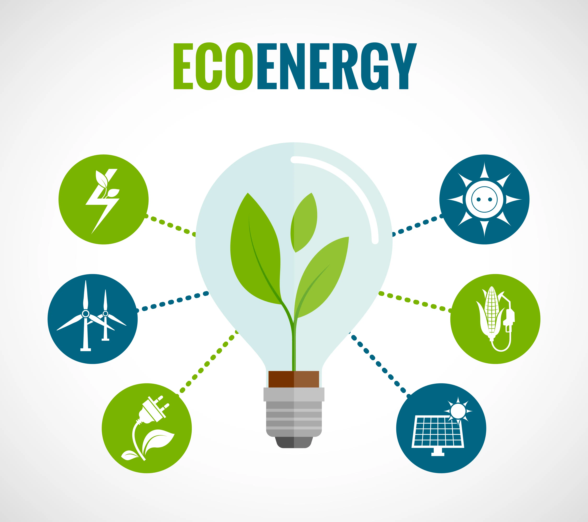

Utilisez le menu pour accéder à mon CV, mes compétences, mes projets, mes vidéos ou pour me contacter.

Actuellement étudiant en BUT Génie Électrique et Informatique Industrielle, avec une spécialisation en Automatique et Informatique Industrielle, je réalise ma formation en alternance au sein du groupe NORDEX. Cette expérience professionnelle m’a offert une immersion concrète dans le monde du travail, m’a permis de m’intégrer pleinement à une équipe, de participer activement à des projets réels et d’assumer des responsabilités variées, renforçant ainsi mes compétences techniques et professionnelles.
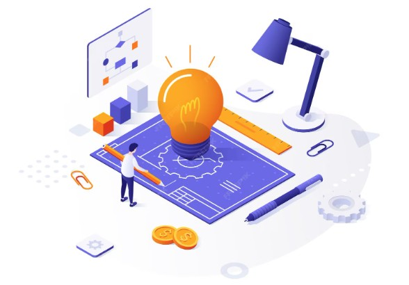
← Retour à l’accueil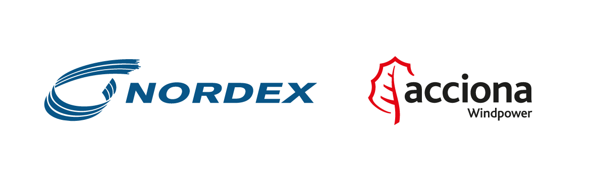
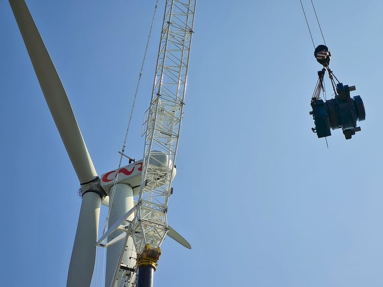
Lors de ma 2ème année d'alternance, j'ai comme projet de diriger un chantier de changement de multiplicateur "gearbox" d'éolienne. Organisation des équipes, planning et budget.
En cours...
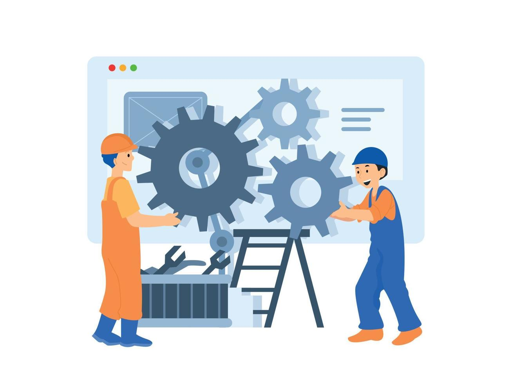
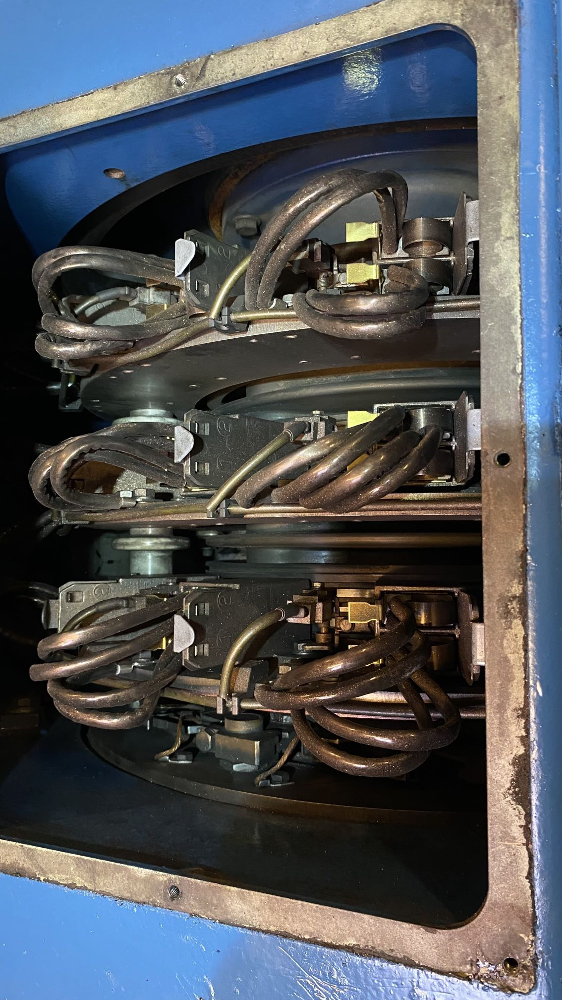
Entretien en maintenance de l'éolienne. Changement de charbon de génératrice, du graissage(pales, rotor, génératrice), regonflage d'accumulateur de groupe hydraulique, prises de mesures, remplacement de filtres, test de sécurité(overspeed, arrêt d'urgence,...).
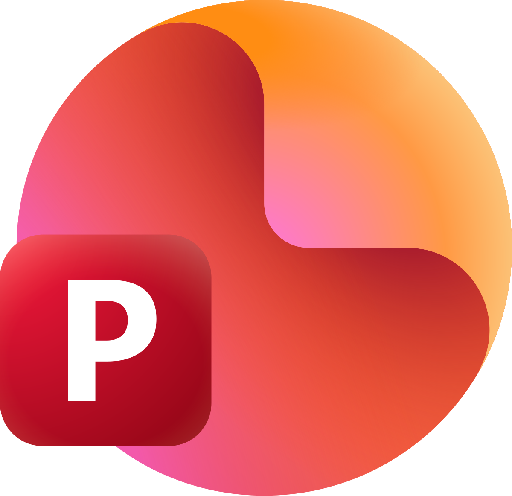
Voici mon diaporama de présentation de projet de première année d'alternance :
Voir la présentation PowerPoint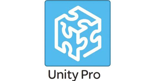
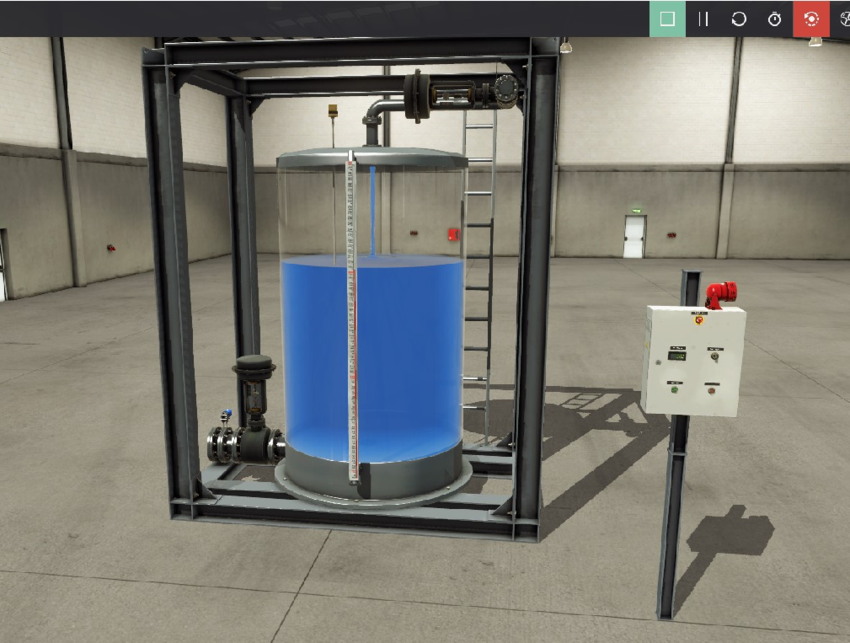
Mon projet a consisté à mettre en œuvre la régulation d’une cuve en environnement simulé à l’aide du logiciel Factory I/O. Pour la commande et la régulation du procédé, j’ai utilisé le logiciel Unity Pro. Dans un premier temps, j’ai assuré la communication entre Factory I/O et Unity Pro via un automate, en définissant l’architecture maître/esclave afin de garantir un échange fiable des données. J’ai ensuite développé différents programmes de fonctionnement, notamment le remplissage automatique de la cuve jusqu’à un niveau maximal,enchainé au vidange automatique, puis un algorithme de régulation permettant d’atteindre et de maintenir une valeur de consigne. Cette régulation repose sur l’ajustement de coefficients afin de gérer automatiquement et précisément le débit de remplissage.
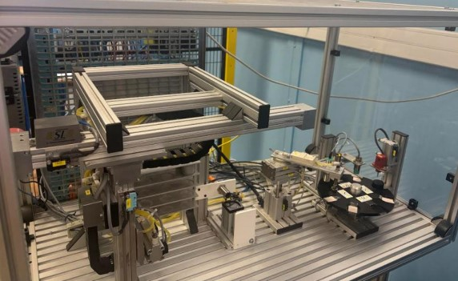
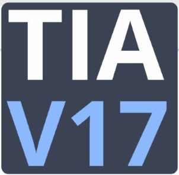
Le but de ce TP sur TIA Portal est de concevoir et mettre en œuvre un système automatisé capable de récupérer une pièce située sur une étagère, puis de la transférer vers un plateau de convoyage. La pièce est ensuite prise en charge par un système d’aspiration qui l’achemine vers une table tournante. Cette table permet d’analyser les caractéristiques de la pièce, notamment son matériau (plastique, aluminium ou métal) ainsi que ses dimensions. Ce projet met en avant l’intégration de plusieurs systèmes automatisés, la coordination des mouvements et la gestion du tri de pièces selon leurs propriétés physiques.
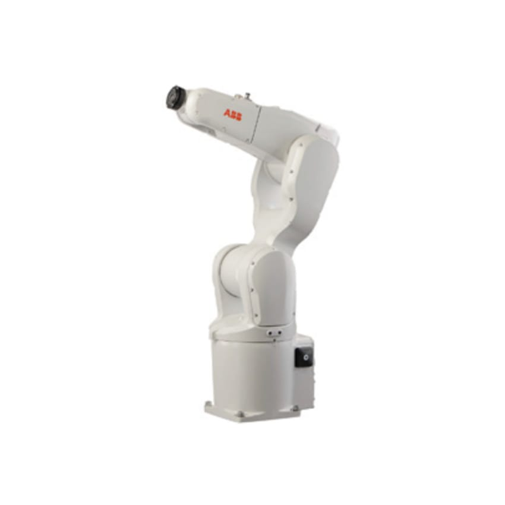
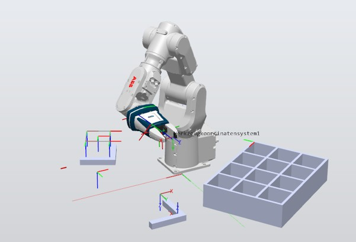
Mon projet consistait, après la récupération d’une pièce, à programmer le robot afin qu’il la présente soit à un capteur, soit à un opérateur humain pour permettre son identification. En fonction de cette analyse, la pièce était ensuite soit rejetée dans une poubelle, soit rangée dans un tiroir dédié. Afin d’optimiser le stockage et d’éviter le sur-remplissage, j’ai intégré un système de compteurs permettant de suivre le nombre de pièces présentes dans chaque tiroir et de gérer automatiquement leur capacité maximale. Ce projet m’a permis de travailler sur la logique de décision, la gestion des capteurs et la programmation robotique en mode manuel et automatique.
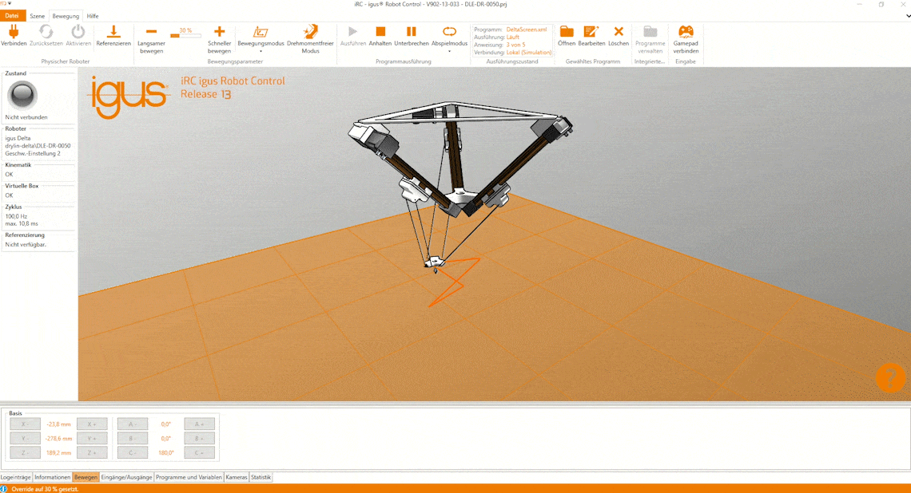
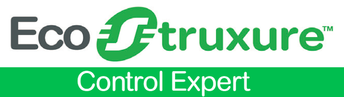
Mon projet a consisté à établir la communication avec un robot IGUS à 3 axes et à réaliser sa programmation à l’aide du logiciel IGUS. J’ai assuré l’ensemble de la configuration matérielle de l’automate sur le logiciel Control Expert Classic, incluant le paramétrage des modules et des échanges. J’ai ensuite créé et structuré les variables, développé les programmes de commande et adapté leur fonctionnement en m’appuyant sur les documentations techniques du robot. Enfin, j’ai mis en place le pilotage et la supervision du robot via un écran IHM, permettant une utilisation intuitive et sécurisée du système.
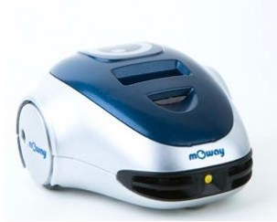
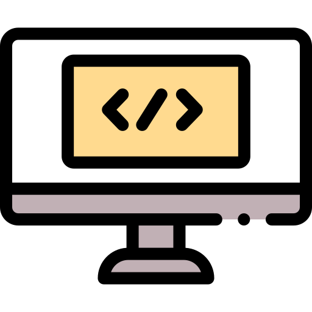
Mon projet consistait à programmer un robot Moway en langage C pour un système embarqué, avec pour objectif de percevoir et suivre une ligne au sol, puis de naviguer de manière autonome dans un labyrinthe afin d’atteindre la ligne d’arrivée sans intervention extérieure. Ce travail m’a permis d’approfondir mes compétences en programmation embarquée, en logique de contrôle et en conception de comportements autonomes pour robot mobile.
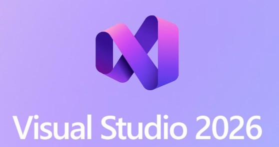
Ce projet avait pour objectif de concevoir une page web développée sous Visual Studio, connectée à une base de données SQL Server. Le principe consistait à recréer un espace numérique de type « Pronote », permettant une gestion sécurisée des notes selon le rôle de l’utilisateur. Chaque étudiant dispose d’un accès personnel lui permettant de consulter uniquement ses propres notes. Les enseignants peuvent consulter les notes des étudiants de leur matière et en ajouter ou les modifier. Un compte administrateur possède quant à lui l’ensemble des droits, notamment la gestion des utilisateurs, des matières et des notes. Ce projet a permis de mettre en œuvre des notions de développement web et de la gestion de bases de données via une page web.
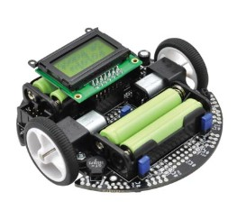

Mon projet consistait à développer un robot suiveur de ligne, avec le logiciel CCS C Compiler et en allant bien au-delà des fonctionnalités de base. J’ai notamment programmé l’interface utilisateur via un écran LCD et des boutons, permettant de sélectionner différents modes de fonctionnement. J’ai également intégré des indicateurs visuels avec des LED, contrôlées selon l’état ou le mode choisi. Ce projet m’a permis d’approfondir mes compétences en programmation embarquée, gestion d’interfaces homme-machine et contrôle de périphériques électroniques.
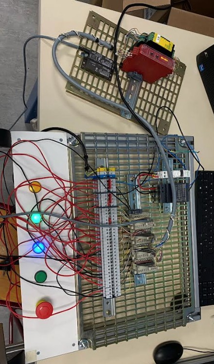
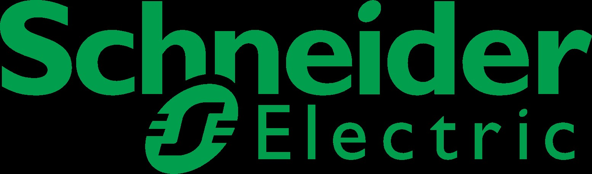
Réalisation de la sécurité câblée à base de relais non programmable. Nous assurerons un câblage avec un arrêt d’urgence, un capteur de porte et un réarmement. Vous trouverez ci-joint le rapport complet de ce projet :
Voir le rapport PDF Le câblage a été réalisé dans le cadre d’un TP, la maquette étant temporaire. C’est pour cette raison qu’il n’a pas été réalisé de manière la plus soignée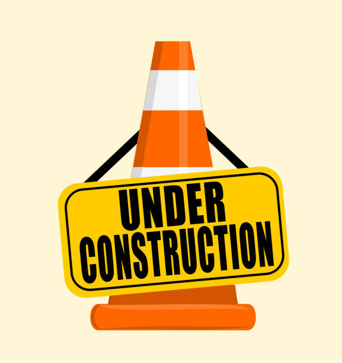
En cours de construction...
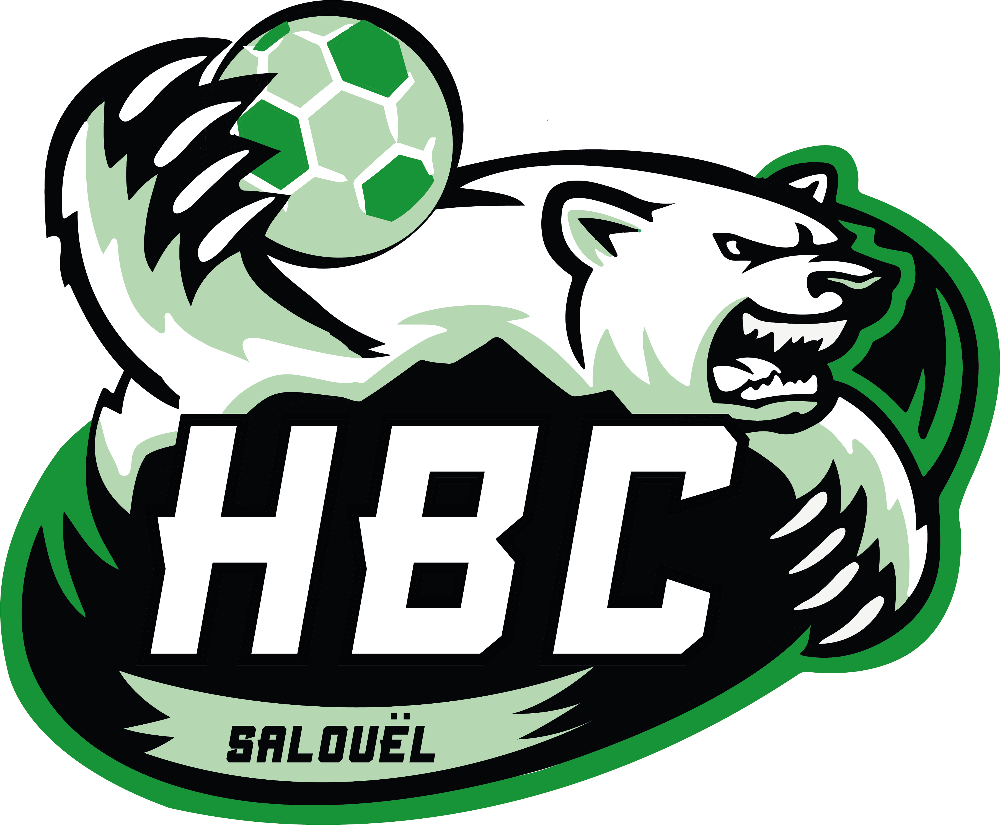
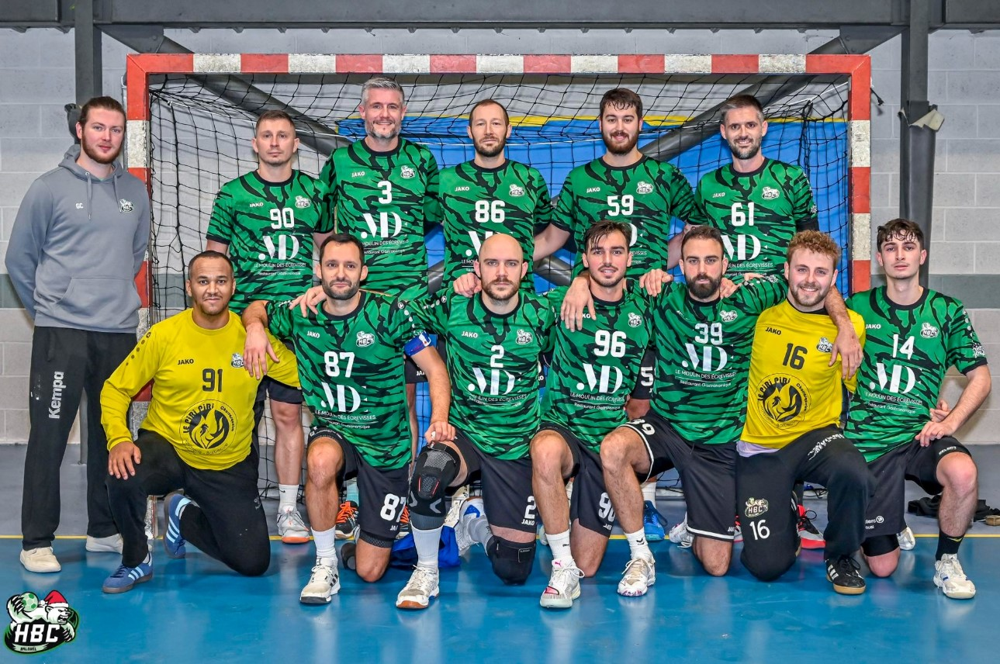
Je pratique le handball depuis plus de 9 ans, ce sport m’a permis de développer l’esprit d’équipe, la rigueur et la persévérance. Je joue actuellement en Régionale 2 dans les Hauts-de-France avec le HBC Salouel, et nous enchaînons les compétitions, notamment avec la finale de la Coupe de la Somme pour la seconde fois consécutive. Le handball représente pour moi un véritable équilibre entre passion, engagement sportif et esprit collectif, tout en me poussant à me dépasser à chaque match.
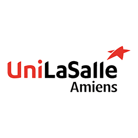